Home

Biomechanical Parasitic Curio
Twisted organic tubes in emerald green, veined with fluorescent streaks, spiral upward into a jagged, carnivorous-flower opening that leans as though caught mid-growth. The tubes catch light unevenly along their ridged surface, brightest where the fluorescent veining runs closest to the opening, and darkest where the tubes twist tightest against each other. Its lean gives the whole cluster a restless, almost predatory posture, as though it were reaching toward something just out of frame rather than standing still on a shelf.
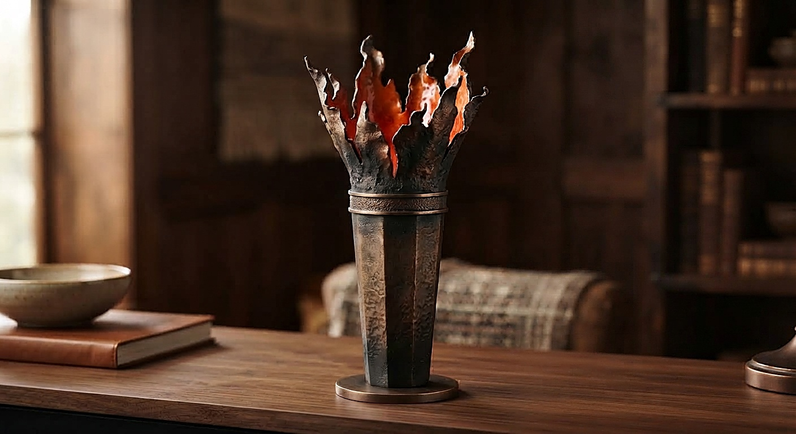
Torch Bloom Vase
Bronze flame petals flare open atop a tall, disciplined torch shaft, their glossy interior glowing amber-red against the hammered, soot-dark metal surrounding them. Meant to hold dark florals or stand alone as a lit sculptural centerpiece, its silhouette shifts from rigid geometry below to wild, torn movement above. The transition from the disciplined lower shaft to the torn, wild petals at the top mirrors a shift from control to release. Placed near candlelight, the hammered surface scatters small points of warm reflection.

Twisted Spiral Wave Vase
Rippling horizontal ridges twist this sapphire-blue vase through seven turns into the shape of a frozen ocean whirlpool, its continuous spiral wall catching light along every ridge. Each of the seven ridges catches light at a slightly different angle as it curves around the body, so the vase shifts subtly in tone depending on where it sits in a room. The overall effect reads less like a static vessel and more like a single wave paused mid-motion, held just before it breaks.

Interlocking Gold Ring Vase
Interlocking torus rings, mirror-finished in gold, lean as if caught mid-collapse around a floating inner ring suspended at the mouth. The five rings never quite settle into a fixed pattern, each one caught at a slightly different tilt so the whole form seems to hover between collapsing and holding its shape. Gold catches every curve differently depending on the light, making the floating inner ring at the mouth the piece's quiet focal point.

Amethyst Geode Cluster
Faceted crystal shards burst upward from a rough rocky base, as though this translucent amethyst formation were split straight from a geode, deepening in color from pale lavender tips to saturated purple at the root. Light passes differently through each of the eleven shards depending on their thickness, so the cluster glows unevenly from within when placed near a window or lamp. The rough, unpolished base grounds the otherwise delicate crystal formation, giving the whole piece the feel of something freshly unearthed rather than manufactured.

Charcoal Bloom Cluster Curio
Clustered organic cells swell and stretch into towering vertical columns on this matte charcoal-black vessel, each one opening into its own trumpet-like mouth. Each trumpet-like mouth opens at a slightly different height and angle, giving the cluster an organic, almost breathing rhythm rather than a repeated pattern. The matte charcoal-black surface absorbs light rather than reflecting it, so the piece reads as a dense, quiet silhouette from across a room.

Terracotta Braided Candle Holder
Twisted blades braid together into a three-point cradle for the candle, finished in raw, unglazed terracotta with a striated hand-thrown texture. The three braided blades twist independently before meeting at the shared cradle, so no two sides of the holder read quite the same from different angles. Left unglazed, the terracotta surface carries the slightly uneven, hand-worked texture of something shaped rather than cast, warming further with age and handling.

Sage Spiral Watertight Vase
Helical banding spirals upward through four widening rotations from a sealed base, wrapped in velvety sage green, its open, transparent look concealing a fully watertight interior chamber. The four widening rotations pull the eye upward and outward at once, giving the vase a sense of gentle, continuous motion rather than a fixed shape. Sage green deepens slightly in the recessed folds of the spiral and lightens on the raised curves, adding quiet depth to what would otherwise read as a flat color.

Amber Figure-eight Vessel
This glossy amber-orange vase leans into a figure-eight silhouette, pairing a ribbed lower reservoir with a creased upper chamber balanced on a triangular base, fully watertight and functional. The ribbed lower half and the smooth, creased upper chamber read almost like two different objects fused at the waist, held together only by the leaning figure-eight silhouette. Amber-orange glows warmest where the glossy surface curves toward light, giving the vase a sense of contained warmth even before anything is placed inside it.

Iridescent Stacked Ring Vessel
Flattened rings taper as they rise in deep violet, metallic-iridescent finish, each carrying a different surface texture from brushed to mirrored to hammered. Each of the seven rings carries its own finish, so light behaves differently ring to ring as it climbs the stack, brushed catching a soft glow while mirrored throws a sharp point of reflection. Deep violet shifts toward blue or magenta depending on the angle, giving the whole piece a quiet, shifting iridescence.

Jade Tendril Curio
Braided tendrils rise into a smooth, egg-shaped body in polished jade green, five of them wrapping the surface like protective vines. At the top, the form tears open into a jagged crater lined with a nest of smaller tendrils. Five of the fifteen tendrils wrap the body like protective vines while the rest rise freely toward the torn crater at the top, giving the piece a sense of restrained tension between what's held close and what's reaching outward. Polished jade green deepens in the tendrils' shadowed folds and lightens along their raised curves.

Rust Tangle Curio
Tight knotting of two dozen intertwined loops anchors this weathered rust-orange curio, from which eight braided forms rise and each terminate differently: a lotus, a thorn, a spiral, a trumpet, a sphere, a disc, a fork, and a broken edge. Each of the eight terminations, from a delicate lotus to a stark broken edge, reads as its own small narrative branching off the same dense, weathered base. Rust-orange patina settles unevenly across the tangled loops, darker in the tightest knots and lighter where the braided forms lift away from the core.

Charcoal Infinity Knot
One continuous ribbon folds into an endless Celtic-style knot on this velvety matte-black figurine, with three vertical lobes and a diagonal grooved texture. The single ribbon never breaks or overlaps itself carelessly, tracing a deliberate, unbroken path through all three lobes before returning to where it began. Matte black absorbs most of the light except along the diagonal grooves, where a faint sheen traces the ribbon's path and makes the endless knot easier to follow with the eye.

Teal Disc-stack Curio
From a spiral-grooved hemisphere, this satin teal-blue curio rises into a swaying column of tilted, overlapping discs, crowned by a cluster of five differently textured spheres. The spiral-grooved hemisphere anchors a column of discs that lean and overlap at slightly different angles as they rise, giving the piece a subtle swaying rhythm rather than a rigid stack. Satin teal-blue softens the light across every surface, while the five textured spheres crowning the top each catch it a little differently.

Terracotta Wave Curio
Cast as a single continuous wave, this matte terracotta curio rises from an oval base and folds over into a soft curl, striated on the outer curve and smooth along the inner fold. The wave rises gradually before folding fully over itself, so the eye is pulled along a single continuous line from base to curled tip rather than across separate parts. Matte terracotta reads warm and dry along the striated outer curve, softening into a smoother, almost polished texture where the inner fold catches shadow.

Mauve Geometric Stack Curio
Stacked rings, each a different geometric shape (circle, square, hexagon, triangle, pentagon, diamond, crescent, figure eight, oval, teardrop, spiral), build this velvety mauve curio, each ring carrying its own surface texture. No two of the twelve stacked rings repeat the same geometric shape or surface texture, so the eye keeps finding something new as it travels up the curio from the wide base to the narrower top. Velvety mauve unifies the varied forms, muting the transitions between circle, hexagon, and teardrop into a single continuous silhouette.

Silver Breaking Wave Curio
Frozen mid-break, this mirror-polished silver wave curio is built from five cascading layers, each with its own curve, edge, and surface treatment, ranging from smooth and hammered to ribbed and stippled. Each of the five cascading layers catches the light differently, the mirror-polished sections throwing sharp reflections while the ribbed and stippled ones scatter it more softly, so the wave reads as genuinely mid-motion rather than static. Frozen at the point just before breaking, the whole piece carries a held, suspended kind of energy.

Stone Braided Horn Curio
This matte stone-gray curio's base splits into three braided stems, each rising to a different height and ending in its own flared mouth: grooved, scaled, and dotted, fully functional for holding flowers. The three braided stems split at different heights, so the three flared mouths, grooved, scaled, and dotted, never quite align, giving the piece a natural, asymmetrical rhythm rather than a matched set. Matte stone-gray keeps the surface reading as raw material rather than polished decoration, letting the braided texture carry most of the visual interest.

Walnut Faceted Origami Curio
Radiating vertical planes, each folded at a different angle and height, intersect into a complex origami-like lattice on this wood-grain curio's hexagonal base, its interior sealed and fully watertight. The six radiating planes fold at different angles and heights, so the origami-like lattice reads differently from every side rather than settling into one dominant view. Wood-grain texture runs consistently across all six planes, giving the geometric folding a warmer, more organic feel than a purely angular form would carry on its own.

Violet Tiered Trumpet Vase
Stacked volumes, ribbed, striped, scaled, spiral-grooved, and a flaring trumpet rim, build this velvety matte-purple vase, each texture shifting the gradient from deep violet at the base to soft lavender at the rim. Each of the five stacked volumes carries its own distinct surface, ribbed, striped, scaled, and spiral-grooved, so the eye travels through a full catalog of texture on the way up to the flaring trumpet rim. The color gradient from deep violet at the base to soft lavender at the rim reinforces that upward visual journey.

Brass Spiral Floor Lamp
Single hammered-ribbon spiraling through eight rotations wraps around a glowing ivory-white cylindrical shade, finished in brushed brass gold, fully functional as a lit floor lamp. The single ribbon spirals with a steady, even rhythm around the glowing shade, so the brushed brass gold reads as continuous motion rather than a fixed pattern wrapped around a cylinder. Lit from within, the ivory-white shade casts a warm, diffuse glow through the gaps left by the spiraling ribbon.

Ivory Segmented Floor Lamp
Tapering ring segments, ribbed, dimpled, spiral, woven, and hammered, stack into this translucent warm-beige floor lamp, glowing softly from an internal light source. Each of the twelve ring segments carries a distinct surface, ribbed, dimpled, spiral, woven, or hammered, so the tapering stack reads as a slow catalog of texture climbing toward the top. Warm-beige translucency lets the internal light source glow softly through every segment, unifying the varied textures into a single continuous silhouette.

Charcoal Branching Floor Lamp
Undulating column expands and contracts as it rises on this matte charcoal floor lamp, glowing through rings of small perforations before dissolving into 24 thin curling tendrils at the top. The column's expansion and contraction gives it an almost breathing rhythm as it rises, each ring of perforations glowing a little differently depending on how tightly the form has narrowed at that point. At the very top, the column dissolves entirely into 24 thin curling tendrils, softening the silhouette from solid to airborne.

Amber Leaf Floor Lamp
Veined, leaf-like forms spiral around a glowing central core on this warm amber translucent floor lamp, each leaf lit from within by hidden internal LEDs. Each of the seven leaf-like forms spirals around the glowing core at its own angle, so the lamp reads less like a fixed structure and more like foliage caught mid-turn around a light source. Warm amber translucency lets the hidden internal glow bleed through every vein, making each leaf appear lit from deep within itself.

Midnight Blue Tiered Lamp
Three volumes stack and rise from a hexagonal base on this matte midnight-blue floor lamp: a ribbed rectangular tower, a rippled flat disc, and a spiral-grooved cylinder, all glowing from within. Each carries its own distinct silhouette, so the lamp reads as three related but separate forms balanced on the same base. Matte midnight-blue keeps the glow reading as a soft internal presence rather than a bright external highlight.

Silver Crescent Floor Lamp
Interlocking crescent shapes spiral upward around a central axis on this brushed silver floor lamp, each one a different height and finish, from mirror-polished to hammered to stippled, with an internal LED column. That variation in finish, rather than a repeated shape, is what makes the spiral read as a slow gradient of texture climbing the central axis. Brushed silver ties the varied finishes together, while the LED column gives the whole spiral a quiet, glowing core.

Champagne Gold Ring Lamp
Floating rings hover at different heights around a glowing central core on this warm champagne-gold floor lamp, each ring carrying its own surface texture, rising from a stepped circular base. The six floating rings hover at staggered heights around the glowing core, so the lamp reads as a loose constellation rather than a stacked structure, each ring's surface texture catching the light differently as it circles the center. Warm champagne-gold ties the varied ring textures together into one cohesive, softly lit silhouette.

Terracotta Cascade Floor Lamp
Tiered bowls cascade like a fountain around a central glowing column on this matte unglazed terracotta floor lamp, set on a textured stone-toned circular base. The three tiered bowls cascade unevenly around the glowing column, echoing the layered motion of a fountain rather than a rigid, symmetrical stack. Matte unglazed terracotta keeps the surface warm and dry-looking, while the textured stone-toned base grounds the piece visually before the eye travels upward through the cascading bowls.

Charcoal Panel Floor Lamp
Rectangular planes interlock and fold and intersect like origami on this matte charcoal-black floor lamp, each panel cut with a different geometric opening, set on a square base. Warm light escapes through the cutouts, casting shadow patterns on nearby walls. Each interlocking panel is cut with its own distinct geometric opening, so the folded, origami-like structure reads differently depending on where the light source sits behind it. Matte charcoal-black keeps the panels themselves quiet and recessive, letting the warm light escaping through the cutouts carry most of the visual interest across the room.

Forest Green Palm Tree Lamp
Rendered as a tall palm tree in matte forest green, this floor lamp's fanning fronds glow warmly at their tips above a textured root base that mimics roots gripping the ground. The fanning fronds spread unevenly from the trunk's crown, each one glowing a little warmer at its tip than at its base, echoing the way real palm fronds catch the last light of day. Matte forest green keeps the trunk and root base grounded and quiet beneath the more animated, glowing canopy above.
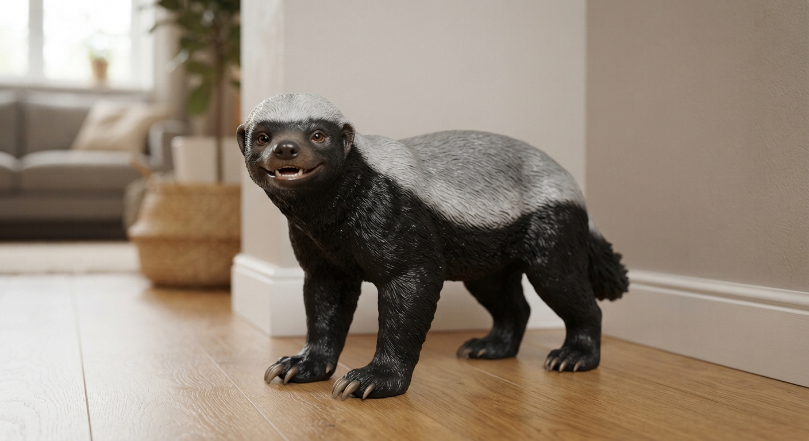
Honey Badger Figurine
Caught mid-stride with a cheerful, forward-turned smile, this honey badger figurine carries the signature silvery-grey saddle over a deep matte black underside, rendered with fine sculpted fur detail and thick front claws. Low and sturdy in build, the figure stands planted on all four legs as if it just rounded the corner of the room. Sharp contrast between the grey saddle and black underside gives the piece a bold, graphic silhouette even from across the room.
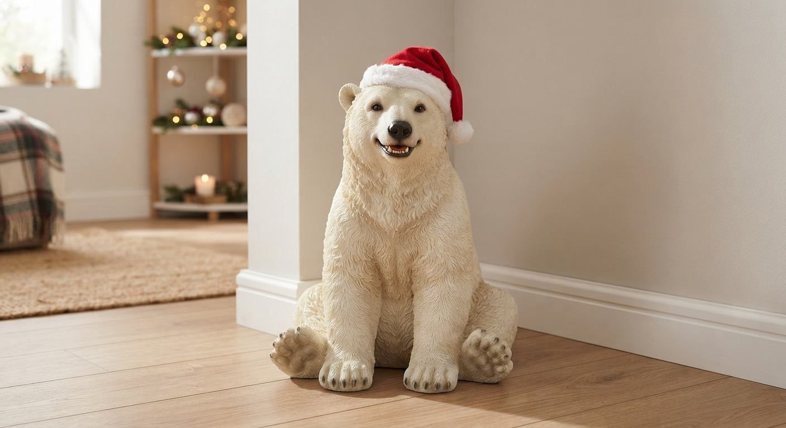
Polar Bear Figurine
Seated with its paws resting on the floor, this polar bear figurine wears a red Santa hat and carries a warm, cheerful smile, rendered in dense white-to-cream fur detail. Sturdy and rounded in build, the figure holds a centered, front-facing pose that anchors the room corner around it. Soft shading across the crown and shoulders gives the white fur a gentle sense of depth, while the red hat draws the eye straight to the smiling face.

Peacock Figurine
In full tail display, this vibrant multicolored peacock figurine carries a polished, gem-like finish and realistic anatomical proportions, standing on a flat oval base sized to match the tail's full spread. The full tail display dominates the piece visually, each feather catching the polished, gem-like finish a little differently depending on its angle within the fan. Vibrant multicolor shifts gradually across the spread, giving the display a sense of depth and movement even though the figurine itself holds a single still pose.

Rainbow Lion Figurine
Mane swept back as if caught in a strong wind, this vivid multicolored lion figurine stands directly on the ground with a glossy finish and realistic muscle and paw detail. The swept-back mane suggests strong wind or fast motion even though the lion stands planted and still, giving the piece a sense of frozen energy. Vivid multicolor patterning across the coat catches the glossy finish differently depending on the angle, while realistic muscle definition keeps the pose reading as powerful rather than merely decorative.

Flamingo Figurine
Balanced on one leg with the other tucked beneath its body, this vibrant pink-and-coral flamingo figurine curves its neck into a graceful S-shape, glossy-finished and standing directly on the ground with no base. The S-curved neck draws the eye from the single standing leg all the way up to the head, giving the pose a sense of quiet balance despite the asymmetry. Vibrant pink-and-coral tones shift gradually across the body, deepening slightly along the curved neck where the glossy finish catches the most light.

Black Wolf Figurine
Ears perked forward in a confident, alert posture, this matte charcoal-gray wolf figurine stands directly on the ground with a velvety finish and realistic muscle and paw detail. The perked ears and forward lean give the wolf an alert, watchful presence even in a completely still pose. Matte charcoal-gray keeps the coat reading as dense and velvety rather than reflective, while realistic muscle and paw detail across the four-point stance grounds the figure in a sense of coiled, ready energy.
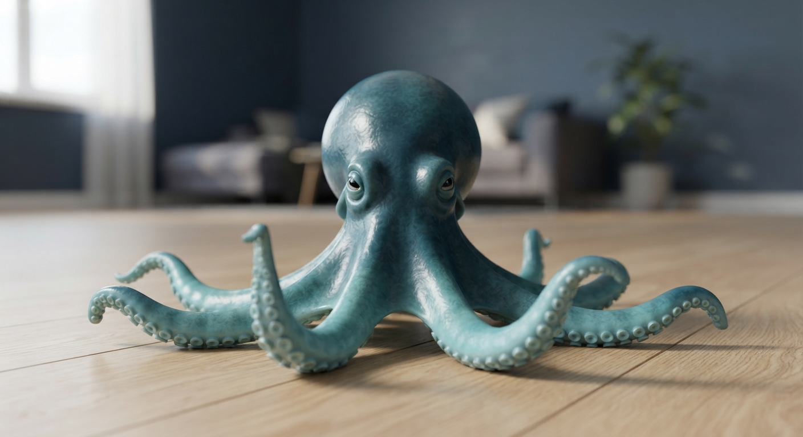
Octopus Figurine
Facing straight ahead with all eight tentacles spread evenly across the floor, this octopus figurine carries a deep teal-blue mantle fading into lighter turquoise tentacles, each one finished with fine sculpted suction cup detail. Rounded and centered in its stance, the figure reads as calm and grounded rather than mid-motion. Soft mottled shading across the mantle and tentacles gives the semi-glossy skin a subtle sense of depth, while the wide, balanced spread anchors the piece naturally into the corner around it.

Golden Eagle Figurine
Fully extended in a dramatic spread, the wings on this deep brown and gold eagle figurine frame a matte finish across a body standing on two legs, its sharp curved talons gripping the ground directly with no base. Fully extended wings give the eagle a dramatic, mid-flight presence even while grounded on its two legs, the sharp curved talons anchoring the pose with visible tension. Deep brown and gold tones shift subtly across the feathers, catching the matte finish differently depending on how each wing curves away from the body.

Mermaid Figurine
Seated gracefully on a weathered natural rock, this vibrant multicolored mermaid figurine has a glossy finish, her hair cascading down and her iridescent scaled tail curling beneath her. Seated on the weathered rock, the mermaid's cascading hair and curling tail draw the eye in two opposite directions at once, giving the pose a relaxed but dynamic feel. Vibrant multicolor scales catch the glossy finish in shifting bands of light, while her hair falls in soft, naturalistic waves down her back.

Winged Unicorn Figurine
Wings fully extended and horn glowing, this vibrant multicolored winged unicorn figurine strikes a powerful pose with a glossy finish, all four legs planted directly on the ground with no base. The fully extended wings and glowing horn give the unicorn a sense of arrested motion, as though caught mid-stride rather than posed still. Vibrant multicolor tones ripple across the glossy coat, deepening along the wing feathers and brightening toward the glowing horn, which draws the eye to the top of the composition first.

Brass Anchor Wall Clock
Cast in the form of a classic ship's anchor in warm brass gold, this wall clock frames a vintage cream clock face with a rope-textured ring and finishes in small triangular flukes at the tips. The rope texture reads like a ship's rigging pulled taut around the face, while the small flukes at the anchor's tips add a sharp, decorative counterpoint to the otherwise rounded silhouette. Warm brass gold catches the light unevenly across the textured rope pattern, adding depth beyond a flat metallic finish.

Aluminum Airplane Wall Clock
Built as a classic propeller-driven airplane in matte silver and brushed aluminum, this wall clock sets a vintage instrument-panel face into the fuselage, with etched panel lines running across the wings. The etched panel lines echo the riveted seams of a real vintage aircraft, giving the fuselage a sense of engineered detail beyond a simple silhouette, while the instrument-panel clock face anchors the whole composition at its center.

Embracing Figures Wall Clock
Elegant figures, a woman and a man, intertwine in a graceful dance that forms a ring around a Roman numeral clock face, cast in matte bronze and warm gold. The two figures never fully separate as they turn through their dance, their intertwined forms tracing a continuous ring around the Roman numeral face at the center. Matte bronze deepens in the folds where the figures overlap, while warm gold catches the light along their outstretched limbs and the clock's outer edge.

Forest Wildlife Wall Relief
Towering pines, a flowing river, and distant mountains build a dense forest scene in layered relief on this vibrant earth-tone wall piece, with an eagle in flight, a family of deer, and rabbits scattered across the foreground, framed for hanging. The eagle in flight draws the eye upward through the scene, while the family of deer and scattered rabbits hold the viewer's attention lower in the composition, giving the whole relief a sense of layered depth from foreground to distant mountains. Vibrant earth tones shift from warm greens near the river to cooler blues toward the horizon.

Galaxy Wall Relief
Swirling spiral galaxy takes shape in relief on this deep cosmic-toned wall piece, glossy-finished and surrounded by colorful nebulae and floating planets, each with its own distinct surface texture, framed for hanging. The swirling spiral galaxy pulls the eye toward its glossy center, while the surrounding nebulae and floating planets, each with its own distinct texture, keep the outer field visually active rather than empty. Deep cosmic tones shift from warm amber near the galaxy's core to cool violet and blue further out.

Autumn Landscape Wall Relief
Vibrant foliage frames a golden forest scene on this warm autumn-toned wall relief, matte-finished and layered with a winding leaf-covered path, a reflective lake, distant hills, and a warm setting sun, framed for hanging. The winding leaf-covered path leads the eye from the foreground back toward the reflective lake and distant hills, giving the relief a genuine sense of depth rather than a flat, layered scene. Warm autumn tones deepen across the foliage nearest the viewer and soften toward the horizon where the setting sun glows.

Girl In The Crowd Wall Relief
Simplified, faceless figures, more than fifty in all, fill this muted gray and soft-blue wall relief in matte finish, except for a single girl in a bright red raincoat standing out at the center, framed for hanging. The contrast between the muted crowd and her single saturated color carries the entire composition's emotional weight.

Anguish Figure Wall Relief
Powerful female figure is captured mid-anguish in full relief on this deep charcoal and warm flesh-toned wall piece, matte-finished with an organic composition and rough, irregular torn edges. The figure's mid-anguish pose twists through the relief with rough, irregular torn edges rather than a clean outline, so the boundary of the piece itself feels part of the emotional composition. Deep charcoal shadow surrounds the warm flesh tones at the figure's center, concentrating attention on the body's tension rather than its surroundings.

Critique of Capitalism Wall Relief
Wealth is not shared, it is staged. This wall relief hangs a banquet table above eye level, where golden, jewel-toned feasters sit caught mid-celebration, plates piled high, joy raised into the light. Below them, carved in flatter, shadowed relief, kneeling figures hold plates that stay empty, close enough to see the feast, never close enough to reach it. The same warm palette washes over both groups, so color alone never separates abundance from want, only height, depth, and distance do. Framed for hanging, the piece asks plainly who is invited to wealth, and who is only invited to hunger.

Battlefield Wall Relief
Opposing medieval armies clash across a battlefield of over fifty warriors on this deep steel and earth-toned wall relief, matte-finished, with dramatic swirling clouds and distant fires in the background, framed for hanging. Fifty-plus individual warriors clash across the battlefield in dense, overlapping formation, their deep steel tones broken by warmer earth colors where the fighting is thickest. Dramatic swirling clouds and distant fires in the background frame the chaos below, giving the whole scene a sense of scale beyond what the foreground alone would suggest.
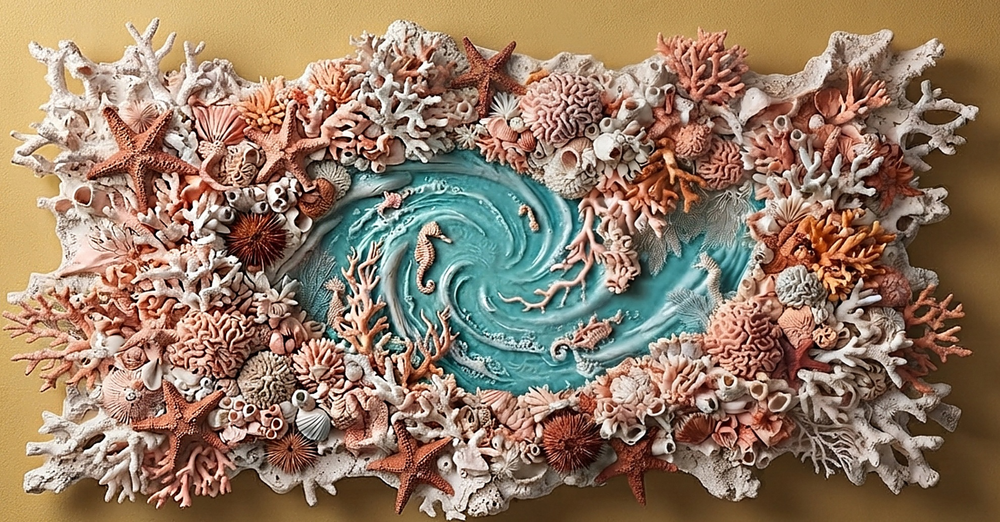
Coral Reef Wave Relief
Branching coral, starfish, and sea urchin clusters wrap a wide, wave-shaped wall panel in matte coral-pink and salmon tones, framing a glossy turquoise whirlpool at its center where seahorses drift through carved current lines. Unframed and irregular-edged, sized to command a large stretch of wall. The coral and starfish clusters thin as they near the glossy turquoise whirlpool at the center, where carved current lines suggest real underwater movement.
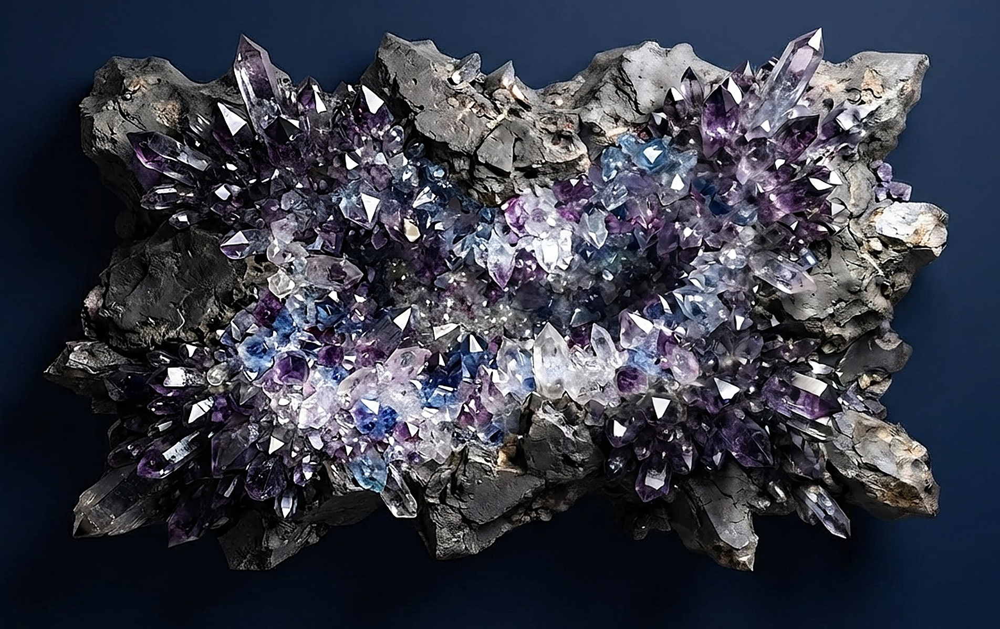
Geode Burst Wall Relief
Sharp amethyst and quartz crystals erupt from a rough charcoal-gray rock shell, thickening to deep purple at the jagged edges and thinning to pale blue and clear facets around a hollow, geode-like center. Glossy crystal facets contrast sharply against the matte stone surrounding them. Unframed and irregular-edged, built to command a large stretch of wall. The crystals thicken into deep purple at the shell's jagged edges and thin into pale blue near the hollow, geode-like center, giving the piece a sense of natural mineral growth.
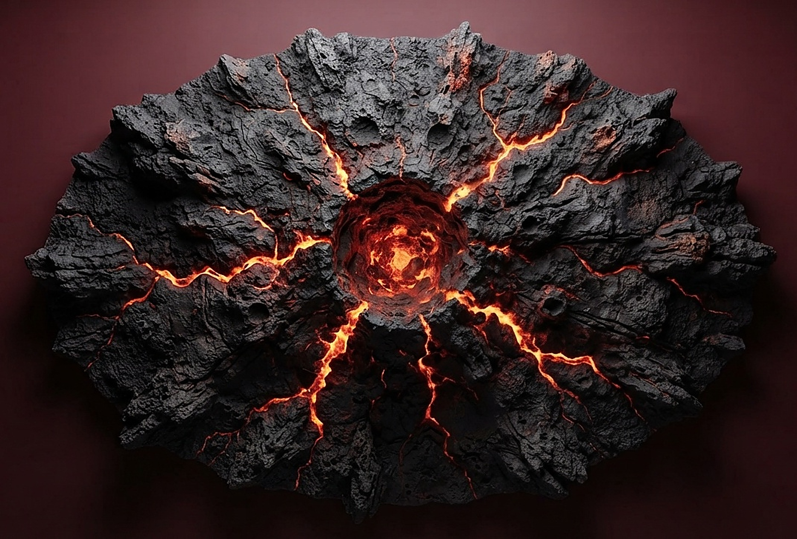
Volcanic Eruption Wall Relief
Glowing lava veins thread through a rough charcoal basalt shell, pooling into a deep crater at the center that radiates a warm red-to-yellow inner light. Set against a near-black backdrop for maximum contrast, the compact oval form is built entirely from jagged, naturally broken rock with no smooth border anywhere on its edge. That contrast between the glowing crater and the surrounding darkness gives the piece a sense of heat trapped inside cold, broken stone.
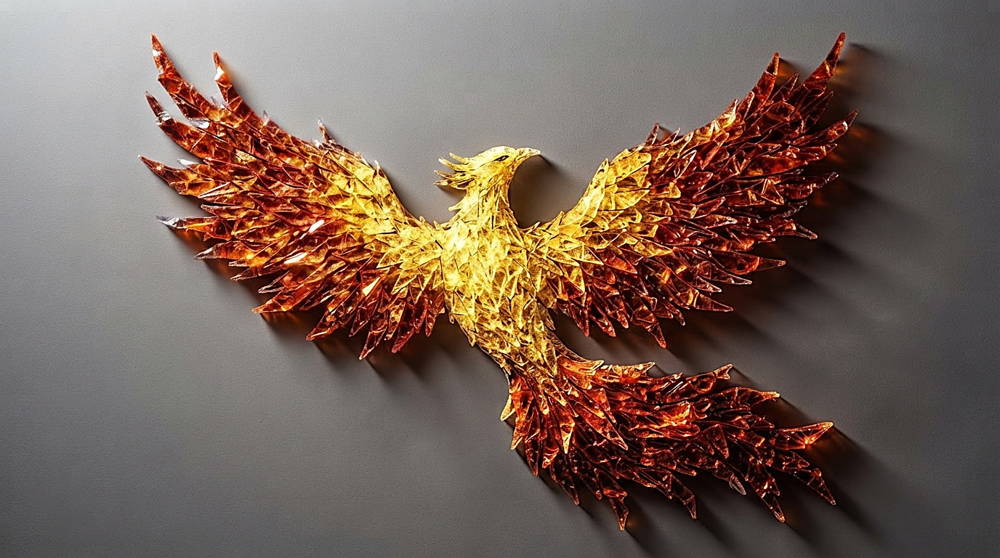
Phoenix Glass Mosaic Relief
Angled glass shards, hundreds of them, catch the light across this wall relief, forming the unmistakable silhouette of a phoenix in flight, golden at the body and deepening to garnet red along its trailing wings and tail. Mounted unframed against a soft neutral backdrop, its jagged, crystalline edges are shaped entirely by the bird's own form rather than any border. Hundreds of individually angled glass shards build the phoenix's silhouette from gold at the body into garnet red at the trailing wings, each facet catching light differently so the bird appears to shimmer rather than sit static.
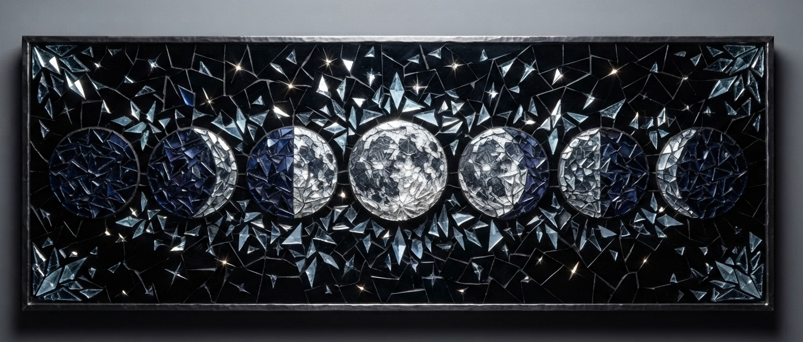
Moon Phases Glass Mosaic
Lunar phases, from new moon to full and back to crescent, are rendered in faceted silver and indigo glass, held inside a thin dark metal frame and scattered with hundreds of tiny star-like shard fragments. Every surface, from the glowing full moon at center to the smallest speck of glass between the phases, catches its own sharp point of light. Each of the eight lunar phases carries its own faceted tone, so the sequence reads as a genuine progression rather than a repeated pattern, with tiny star-like shards scattered between them.
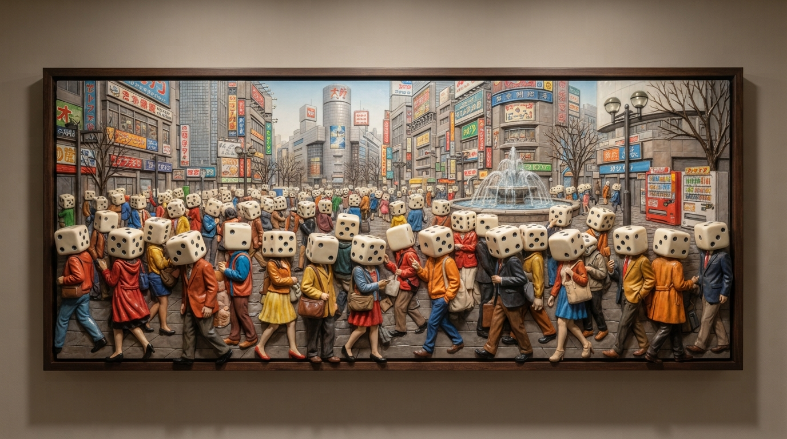
Probabilities Of Thought Wall Relief
Crowds fill a Tokyo pedestrian square beneath a bank of glowing neon signage, every figure dressed in richly colored coats but topped with a single oversized ivory die, black pip dots catching the gallery light. Framed in dark wood for wall mounting. The crowd's richly colored coats contrast with the uniform ivory dice topping every figure, giving the composition a quiet, uncanny rhythm beneath its surface realism as the nearest figures stand almost fully in the round.
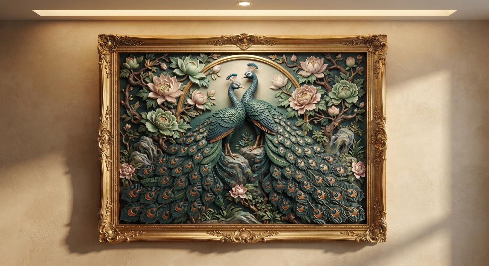
Twin Peacocks Floral Wall Relief
Peacocks stand center on a carved rock, crested heads turned toward each other beneath a golden arch, tail feathers spreading in a wide symmetrical fan of teal, sapphire, and violet down to the base. Copper-gold eye markings catch the light along every feather while pastel lotus and peony blooms curl through the branches surrounding them. Held inside an ornate gold baroque frame with scrollwork corners.
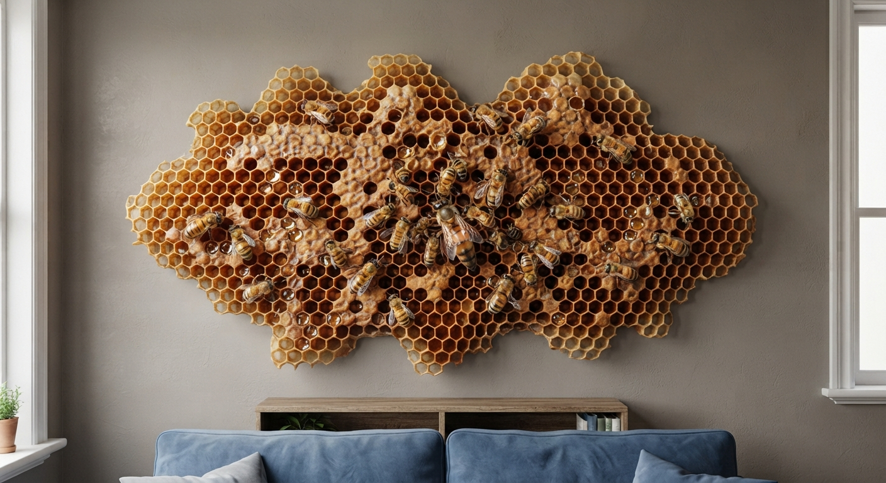
Honeycomb Queen Bee Wall Relief
Worker bees move across a dense field of honeycomb, some tucked into open cells, others paused on the surface with wings raised, honey pooling amber and gold in the fullest cells. One noticeably larger queen bee sits at the center, an attending cluster gathered close around her. The comb carries no frame or straight edge, its outer boundary breaking into whole, half, and broken cells the way a real piece torn from a hive would look.
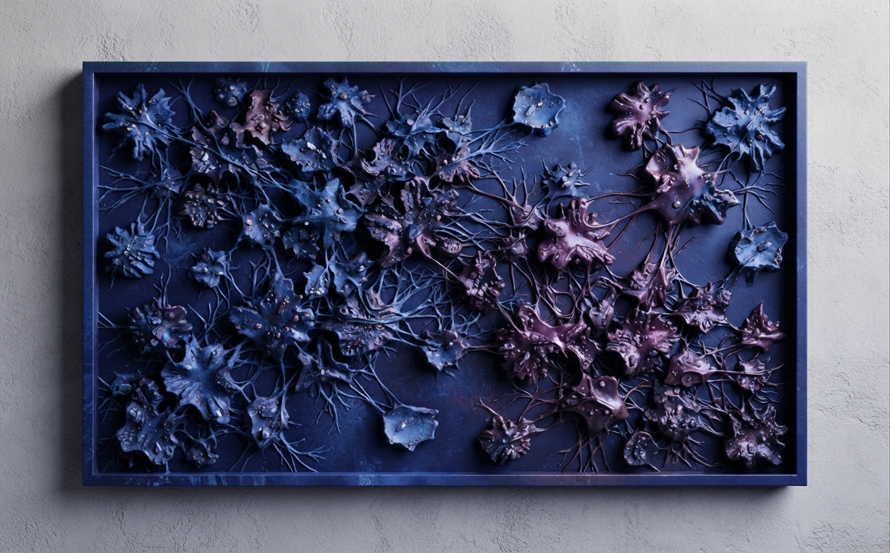
Connection Wall Panel
Organic, cell-like nodes, dozens of them, spread across this deep teal and warm bronze wall panel, some sitting close together without ever touching, others threaded to their neighbors by delicate bridging filaments. Isolated nodes hold a cool oxidized patina with fine mineral speckling, while connected clusters warm gradually into bronze and amber, as if the bridges carry light between them. Matte cast-stone finish throughout, framed in a clean rectangular border for wall mounting. The bridging filaments give the panel a sense of quiet connection running beneath an otherwise scattered field of nodes, as if mapping relationships rather than simple decoration.
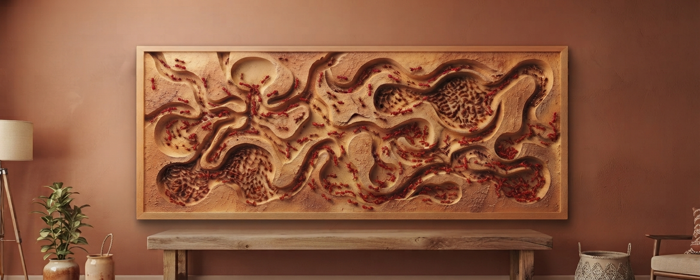
Ant Colony Wall Panel
Branching network of tunnels and chambers spreads across this wide terracotta and sienna wall panel, carved as if cut straight from an underground colony. Winding passages fork and dead-end in every direction, some connecting distant chambers, others leading nowhere, while over a hundred small reddish brown ants cluster thickest in the wider chambers and trail singly along the narrower paths. Fine granular texture across the sandy ochre surface reads like compacted earth, framed in a clean rectangular border for wall mounting. Some passages dead-end abruptly while others connect distant chambers, giving the panel a genuine sense of underground logic rather than a decorative maze.
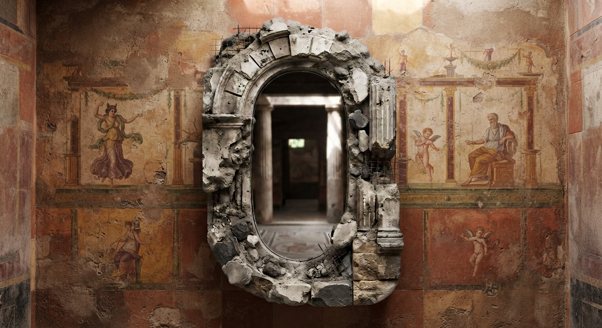
Ancient Ruin Mirror
Elongated oval mirror set within a partially collapsed stone archway, one side holding an intact, tool-worked column base, the other fractured into loose rubble with exposed oxidized rebar. Weathered travertine and limestone tones with warm ochre plaster staining throughout the frame. The asymmetry between the two sides gives the piece a sense of arrested collapse, as though uncovered mid-excavation rather than designed from the start. Light falls differently across the rough stone and the smooth mirror surface, deepening the contrast between what has crumbled and what still stands intact.
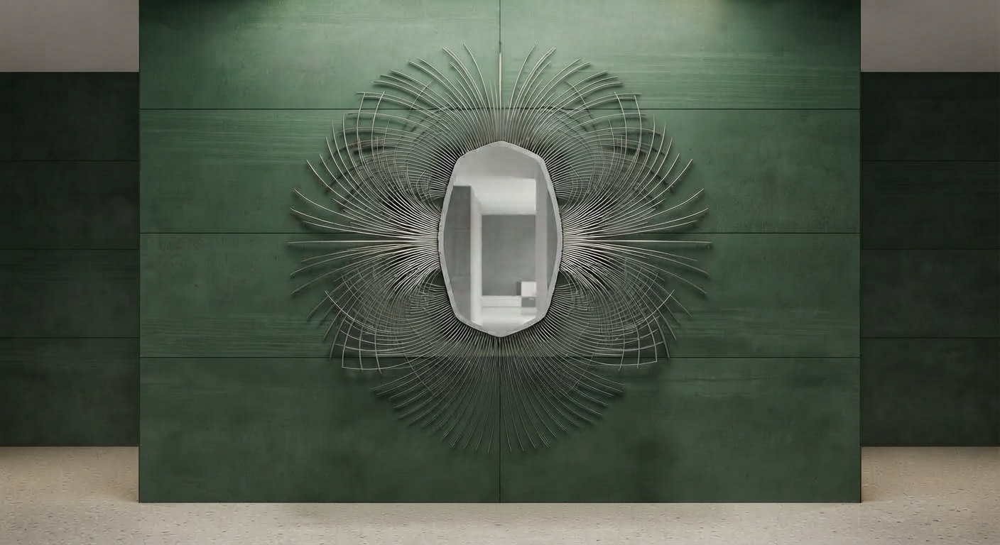
Magnetic Lines Mirror
Hundreds of thin curved lines radiate symmetrically outward from an elongated oval mirror, resembling a magnetic field frozen in place around the reflective center. The lines pack tightly near the mirror's edge, almost touching at their base, then spread progressively further apart as they reach outward, opening into visible negative space by the outer boundary. No two adjacent lines share exactly the same curvature or length, giving the burst a hand-drawn precision rather than a mechanically repeated pattern. Brushed silver and platinum tones catch the light along each curved edge.
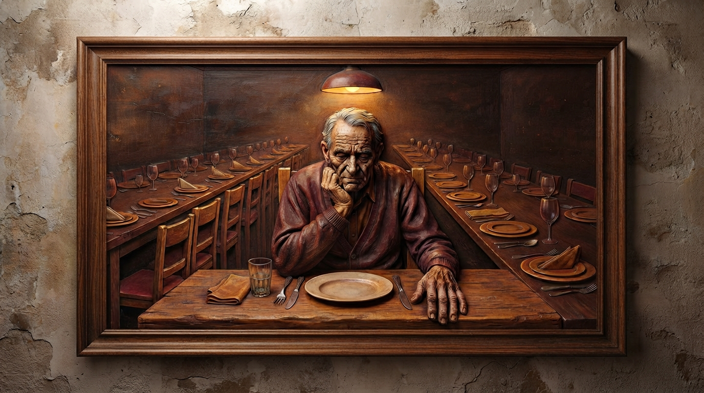
Meal Eaten Alone Wall Relief
One chair is filled tonight, and it is his own. This wall relief carves an elderly man seated alone at a table built for many, elbow propped, chin resting on his hand, gaze lowered in quiet thought. Down both sides, empty plates and folded napkins stretch into the dark, each place setting untouched, waiting for guests long gone. Warm light gathers close around him and fades to cooler shadow toward the table's far ends, so distance itself carries the weight of being alone. Framed in dark wood for hanging.
Aircraft & Drone
Retractable Wing Flap Cover System
Multi-panel retractable wing flap cover system engineered around aerodynamic load optimization and certification-grade structural analysis. Verified for the narrow-body jet wing platform, the configuration is the only one in the study to deliver a net positive fuel and economic outcome over its service life.
Automotive Parts
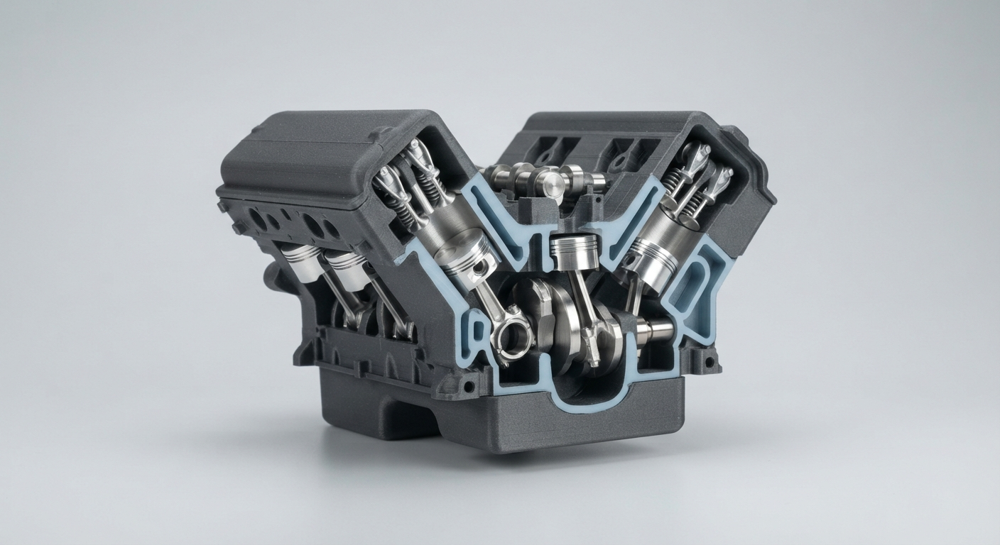
High-Performance V8 Engine Cutaway
This cutaway display model exposes the full cylinder banks of a V8 engine layout, revealing piston positions across the combustion cycle, a cross-sectioned crankshaft housing, and the routing of internal coolant passages. Built as a parametric, production-ready 3D print brief rather than a rendered concept alone.
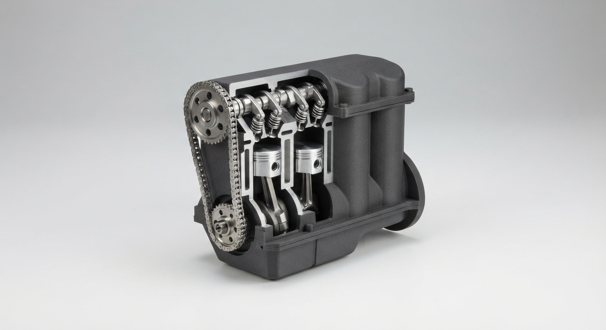
Compact Inline-Four Engine Cutaway
This partial cutaway model exposes the camshaft lobes, rocker arms, and a cross-sectioned piston skirt of a compact inline-four engine, leaving the surrounding housing intact to frame the internal detail. Built as a parametric, production-ready 3D print brief rather than a rendered concept alone.